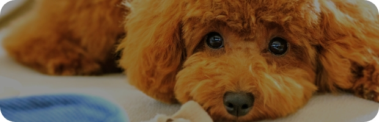

専攻紹介
トータルペットケア専攻
動物と飼い主さまの
より良い暮らしと関係を築く人に
3年制では、グルーミング、動物看護、トレーニングに関する知識と技術を学び、幅広いフィールドで活躍できる人財（人材）を目指します。2年制では、グルーミングの知識・技術、動物看護の基礎知識を学び、ペットと飼い主さまのハッピーを提案できるトリマーを育成します。
目指せる職業
ペットショップスタッフ
ペットシッター士
動物病院（院内スタッフ）
目標とする資格
# D.I.N.G.O.認定プロスタッフ【3年制のみ】
# D.I.N.G.O.DDCT【3年制のみ】
# D.I.N.G.O.ADICT-Ⅰ、Ⅱ【3年制のみ】
トータルペットケア専攻で学ぶこと
1.クリッカートレーニング
さまざまな動物へトレーニングを行うことができるクリッカートレーニング。プロ資格を取得します。【3年制】
2.動物看護臨床検査学実習
動物病院で行うさまざまな検査方法を学びます。【3年制】
3.グルーミング実習
基礎から丁寧な実践的指導を行い、学生に応じた実習を進めていきます。
4.動物の病気
動物の体の仕組みや病気についての知識を身につけます。
動物看護専攻
動物と飼い主さまの心も
サポートできる動物看護師に
獣医師を補佐し、心と体に傷を負った動物の看護を担う動物看護師。その仕事は、動物病院の受付、衛生管理、手術補助、臨床検査、飼い主さまへのアドバイスと多岐にわたります。本専攻では、動物医療における総合的な知識と技術を身につけた動物看護師を育成します。
目指せる職業
動物看護師
動物保護施設スタッフ
ペットショップスタッフ
目標とする資格
# 愛玩動物看護師
# 動物診療助手
# 愛玩動物飼養管理士】
動物看護専攻で学ぶこと
1.獣医師の直接指導の下、外科手術実習を現場に即した内容で実施
1年次に外科学を学び、その後、外科実習プログラムへと進めていきます。手術チームを組んで、手術前・手術中・手術後における器材・備品・薬剤管理、生体モニターなど一つ一つ学んでいきます。
2.動物飼養管理実習・グルーミング実習・犬のトレーニングなど総合的に学ぶ
「好き」から学ぶ動物好きの学生が多く、自分の「好き」な動物たちからたくさんのことを学びます。飼育当番は365日当番制で休みなく実施、動物に対しての責任、チームワークの大切さを学んでいます。
3.臨床検査実習や総合臨床実習（インターンシップ）において、企業と連携して実学を学ぶ
臨床検査実習のまとめでは実際に動物病院へ行き、現場の検査機器で手順や扱い方を学びます。インターンシップは、2年間で4回行い、さまざまな動物病院・関連企業の現場を学ぶことができます。
4.ボランティア活動やビジネスマナーの授業を通してコミュニケーション力を高める
県内で行われるさまざまなイベントやボランティア活動に参加することにより、企業の方・一般のお客さまとの関わりや臨機応変に動くことが必要になってくるので、コミュニケーション能力や現場での対応力を育むことができます。
動物飼育・ショップビジネス専攻
動物の生態を知り、深い愛情で接する
プロの飼育員に
コンパニオンアニマル（ペット）だけでなく、動物園・水族館などで飼育されている大型動物を含めた動物全般の飼育管理ができる知識と技術を学びます。また、人・動物・自然との共生を考え、伝えることができる人財（人材）を育成します。
目指せる職業
動物園飼育員
ドルフィントレーナー
水族館スタッフ
目標とする資格
# 潜水士（国家資格）
# PADIスクーバダイビングライセンス
# 愛玩動物飼養管理士
動物飼育・ショップビジネス専攻で学ぶこと
1.自然と関わる授業や行事がたくさん
自然環境について学ぶ機会やボランティア活動に積極的に取り組み、動物保護についての関心を深めます。
2.チーム意識を高める
社会に出たら、仲間とコミュニケーションを取りながら目標を達成しなくてはいけません。本専攻では、さまざまな実習を通してチームで行動し、コミュニケーション力を高め協力することで協調性を養っていきます。
3.在学中にさまざまな経験が積める
動物園、水族館、ペットショップでの実習など2年間で多くの経験が積めるので、就職の視野が広がります。
4.世界に誇れる沖縄の自然環境で学べる
サンゴが生息するきれいな海、天然記念物のヤンバルクイナや固有種あふれる豊かな森。そこを学びの場として、沖縄でしか行えない実習が満載！